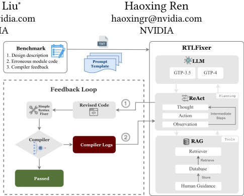
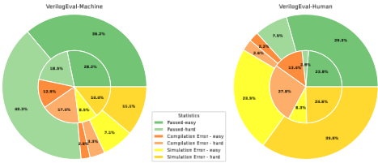
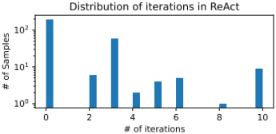

RTLFixer：基于大语言模型的 RTL 语法错误自动修复
该论文针对 LLM 生成 Verilog 代码中约 55% 的错误为语法错误、直接导致编译失败的问题，提出 RTLFixer 自动调试框架。方法上以 LLM 为自主 agent，通过 ReAct 提示在 Thought-Action-Observation 循环中结合编译器反馈迭代修订代码，并用 RAG 检索人工整理的'编译器日志-专家修复指引'数据库（iverilog 7 类 30 条、Quartus 11 类 45 条）弥补模型知识盲区与报错歧义。在基于 VerilogEval 构建的 212 个错误样本上修复约 98.5% 的编译错误，使 VerilogEval-Machine/Human 的 pass@1 分别提升 32.3% 与 10.1%，RTLLM 上语法成功率从 73% 升至 93%。论文同时明确指出该方法对仿真/功能错误的修复能力有限，复杂推理类问题提升较小。
LLM 生成 Verilog 代码一次通过率低，且分析显示约 55% 的错误为语法错误、导致编译失败；已有 LLM 自调试工作（SelfDebug、SelfEvolve 等）主要面向 Python 功能正确性提升，未显式解决 RTL 语法错误修复，人工修错负担重。
RTLFixer 由三部分组成：(1) LLM（实验用 GPT-3.5/GPT-4）作为代码生成与调试主体；(2) ReAct 提示使 LLM 以 Thought-Action-Observation 交错方式自主规划调试步骤，动作包括解释错误、检索专家指引、修订代码、提交编译，最多迭代 n 轮（实验设 10 轮）直至编译通过；(3) RAG 检索数据库存储编译器日志、错误代码片段与人工撰写的专家修复指引，按错误 tag 精确匹配注入上下文，缓解报错信息歧义与 LLM 幻觉。实验以 iverilog 与 Quartus 编译器反馈作为闭环信号，并另建规则式预修复器处理 timescale 等简单错误。
在自建 VerilogEval-syntax 调试数据集上修复约 98.5% 的编译错误（数据集规模：摘要与 3.4 节为 212 个错误实现，引言处写 174）
修复语法错误后，VerilogEval-Machine 与 VerilogEval-Human 的 pass@1 分别提升 32.3% 和 10.1%
使用 Quartus 编译器时，RAG 使 One-shot 修复率从 58.7% 提升到 89.9%（+31.2%），ReAct 从 79.9% 提升到 98.5%（+18.6%）
ReAct 相比 One-shot 在 Simple/iverilog/Quartus 反馈下分别提升语法修复率 25.7%/26.4%/31.2%
GPT-3.5 生成 Verilog 的错误中 55% 为语法错误；仅修复语法错误即使 VerilogEval-Human 通过率从 26.7% 提升到 36.8%
在 RTLLM 基准上不新增检索库即可将语法成功率从 73% 提升到 93%，验证泛化性
GPT-4 + One-shot + RAG 成功率从 89.9% 提升到 98%；约 90% 的问题单次修订即可解决
easy 问题 pass@1 提升 14.5%，hard 问题仅提升 6.7%
区别于已有 LLM 自调试工作（SelfDebug、SelfEvolve 等聚焦 Python 功能正确性、不显式处理语法错误），本文首次专门针对 LLM 生成 Verilog 的语法错误修复：将 ReAct 自主 agent 与编译器在环多轮反馈结合，并创新性地以人工整理的'编译器日志+错误代码+专家修复指引'数据库做 RAG，用人类经验弥补模型能力不足；同时发布 VerilogEval-syntax 语法调试数据集。
相关度级别：high
命中能力域：2.2 RTL 设计与实现 | 2.7 EDA/验证自动化与 AI 辅助
理由：直接命中 2.7 域'LLM/AI 辅助 RTL 生成/验证/bug 分析'的核心场景，并与 2.2 域的 RTL quality（编译/lint 错误清理）相关。团队在 LPDDR/HBM/UCIe 等 IP 交付中大量面对编译、lint、CDC 类报错的人工修复；若推进 LLM 辅助 RTL 生成或验证脚本自动化，语法错误自动修复是提升一次通过率的关键组件。其'编译器日志+专家修复指引'检索库思路可迁移为团队内部调试经验的沉淀与复用机制，且代码与数据集已开源，便于评估。
建议动作：深入精读并做内部分享
YunDa Tsai ∗ yundat@nvidia.com NVIDIA
本文提出 RTLFixer，一种利用大语言模型（Large Language Models, LLM）实现 Verilog 代码语法错误自动修复的新型框架。尽管 LLM 展现出令人期待的能力，我们的分析表明，LLM 生成的 Verilog 代码中约 55% 的错误与语法相关，从而导致编译失败。为解决这一问题，我们提出了一种新颖的调试框架，该框架采用检索增强生成（Retrieval-Augmented Generation, RAG）和 ReAct 提示技术，使 LLM 能够作为自主智能体，基于反馈以交互方式调试代码。该框架在解决语法错误方面展现出卓越的能力，在我们的调试数据集中成功修复了约 98.5% 的编译错误，该数据集包含源自 VerilogEval 基准的 212 个错误实现。我们的方法使 VerilogEval-Machine 和 VerilogEval-Human 基准上的 pass@1 成功率分别提升了 32.3% 和 10.1%。源代码和基准可在 https://github.com/NVlabs/RTLFixer 获取。
YunDa Tsai、Mingjie Liu 和 Haoxing Ren。2024年。RTLFixer：利用大语言模型自动修复RTL语法错误。发表于第61届 ACM/IEEE 设计自动化会议（DAC '24），2024年6月23日至27日，美国加利福尼亚州旧金山。ACM，美国纽约州纽约，共6页。https://doi.org/10.1145/3649329. 3657353
大语言模型（LLMs）在硬件设计自动化方面展现出巨大前景，尤其是其理解设计意图并从自然语言生成 Verilog 代码的能力 [8]。近期的工作，如 VeriGen [17] 和 VerilogEval [9]，主要聚焦于零样本代码生成。然而，与众多复杂的编程任务类似，一次性生成完美无缺的代码是一项重大挑战，出错的可能性很高。因此，对于 LLMs 生成的 Verilog 代码，显然需要强大的调试与改进能力。这一需求源于：与人类程序员一样，实现精确往往需要多次迭代。
最重要的是，显而易见，LLMs 在生成完全语法正确的 Verilog
∗ 同等贡献
允许免费制作本作品全部或部分的数字或硬拷贝副本供个人或课堂使用，前提是这些副本并非出于营利或商业利益目的而制作或分发，且副本在首页带有本声明和完整的引用信息。本作品中归作者以外的他人所有的组件之版权必须得到尊重。允许在注明出处的情况下进行摘录。若要以其他方式复制、再版、发布到服务器上或重新分发到列表中，则需要事先获得特定许可和/或支付费用。如需申请许可，请联系 permissions@acm.org。
DAC '24，2024年6月23日至27日，美国加利福尼亚州旧金山
© 2024 版权归所有者/作者所有。出版权授权给 ACM。ACM ISBN 979-8-4007-0601-1/24/06...$15.00 https://doi.org/10.1145/3649329.3657353
Mingjie Liu ∗
mingjiel@nvidia.com NVIDIA

代码时面临挑战。令人惊讶的是，我们的分析显示，LLMs 为 Verilog 代码生成的错误中有高达 55% 由语法错误构成，超过了通过仿真检测到的逻辑错误的发生率。纠正语法错误不仅可以提高 LLM 生成代码的整体准确性，还有望减轻从事 Verilog 编码的人类工程师的手工工作量。识别并缓解语法错误是必不可少的步骤，这不仅有助于改进 LLM 的能力，也有助于为 Verilog 开发领域的人类从业者简化编码流程。
尽管存在这些挑战，大语言模型（LLM）在推理以及增强行动计划以应对异常方面展现出了卓越的能力。ReAct 框架 [20] 在语言模型中集成了推理与行动合成，展示了 LLM 参与推理过程并通过交互式反馈改进决策的能力。类似地，SelfDebug [3] 和 SelfEvolve [6] 说明了模型通过仔细审查执行结果并用自然语言阐述所生成的代码来自我识别错误的能力。需要着重指出的是，先前的工作并未明确处理语法错误的纠正，而是主要聚焦于提高所生成代码的准确性，尤其是在 Python 中——语言模型在该语言的语法上表现出色。
另一方面，LLM 被公认倾向于产生事实性错误，这一现象被称为幻觉 [5]。为了缓解这一挑战，检索增强生成（Retrieval-Augmented Generation，RAG）范式 [7] 被提出，它集成了检索机制，通过纳入来自外部知识源的信息来提高所生成内容的精确度。
在本文中，我们提出了 RTLFixer，一种创新性的调试框架，它将 LLM 用作自主语言智能体并结合 RAG。我们专注于解决纠正寄存器传输级（RTL）Verilog 代码中语法错误这一挑战——这是一个对 LLM 和人类工程师都具有潜在益处的重要问题。如图 1 所示，我们的框架将存储在检索数据库中、用于纠正语法错误的既有人类专业知识，与 LLM 作为自主智能体进行推理和行动规划（ReAct）的能力相结合。通过融入人类专业知识，当 LLM 在纠错方面遇到困难时，我们的方法能够提供明确的指导与解释。所存储的编译器消息和人类专家指导充当持久的外部非参数化记忆数据库，并通过 RAG 增强结果。通过以 ReAct 赋能 LLM，LLM 便作为自主智能体，善于为迭代调试策略性地规划中间步骤。我们还构建了 VerilogEval-syntax，一个源自 VerilogEval [9] 的 Verilog 语法调试数据集，其中包含 174 个错误实现。
我们的贡献总结如下：
本文其余部分的结构安排如下。第 2 节介绍有关 LLM 用于 Verilog 代码生成、ReAct 以及 RAG 的预备工作。第 3 节阐述我们的调试框架 RTLFixer，其中我们借助 ReAct 将 LLM 赋能为自主智能体，并创新性地通过 RAG 提供人类指导。第 4 节详细给出我们的实验结果，展示了我们的方法在纠正语法错误和提高通过率方面的有效性。最后，第 6 节对论文进行总结并得出结论。
在本节中，我们首先在第 2.1 节简要探讨大语言模型（LLM）在 Verilog 代码生成方面的进展与应用。随后，我们深入探讨 LLM 中推理与行动的融合，具体内容将在第 2.2 节中详细阐述。最后，我们在第 2.3 节讨论检索增强生成（RAG）。
大语言模型（LLM）具备生成代码的能力，其中 Codex [2] 是早期的典型代表。GitHub Copilot [4] 在此类工作基础上，率先开创了基于 LLM 的代码补全引擎，为自动补全和对话式代码生成领域做出了重要贡献。DAVE [14] 是早期专门面向硬件设计定制的 LLM 研究。VeriGen [17] 进一步扩展了数据集的范围，并对开源模型进行了实验。紧随其后，ChipChat [1] 借助 GPT-4 展示了 LLM 在协同生成处理器及其他硬件设计方面的巨大潜力。与此同时，VerilogEval [9] 和 RTLLM [11] 等基准测试在推动 LLM 在 Verilog 代码生成中的应用方面发挥了关键作用。
大语言模型（LLMs）已在各类任务中展现出出色的推理与规划能力。在推理方面，思维链（chain-of-thought）[18] 等方法使 LLMs 能够将复杂问题分解为合乎逻辑的步骤，显著增强了其问题求解能力。LLMs 在交互式决策与制定行动计划方面同样表现优异，能够有效利用数字化工具，如 ToolLLM [15] 等工作所示。
ReAct [20] 框架通过将推理与行动规划无缝结合，代表了 LLM 能力上的一次显著进步。该框架使 LLMs 能够同时生成推理轨迹与具体动作，从而实现与外部信息源的动态交互。这种结合不仅提升了 LLM 在复杂任务中的表现，还使其作为自主智能体更加可靠、更具通用性，能够给出更准确且具备上下文感知能力的响应。
检索增强生成（Retrieval-Augmented Generation，RAG）[7] 代表了在解决大语言模型处理知识密集型任务时所面临局限性方面的一项重大进展。尽管 LLMs 包含大量事实性知识，但在访问和有效操作这些信息时常常遇到挑战。RAG 利用了作为参数化记忆的 LLMs 与作为非参数化记忆的外部知识库（如 Wikipedia）的组合。这种独特的方法使 RAG 能够根据输入查询从外部知识库中访问并检索相关文档或段落。因此，这丰富了文本生成器可用的上下文，使输出展现出更高的准确性和事实一致性。在代码生成领域，ReACC [10] 和 RepoCoder [21] 等多项工作已成功利用 RAG 的能力来提升 LLMs 的代码生成水平，展示了其变革性潜力。
在本节中，我们将详细介绍 RTLFixer，它利用了由 ReAct 和检索增强生成（RAG）增强的自主语言智能体（Autonomous Language Agents）。该框架的结构如图 1 所示（第 3.1 节），ReAct 的应用将在第 3.2 节中深入讨论。此外，第 3.3 节探讨了如何借助 RAG 融合人类专家指导。最后，我们说明了 VerilogEval 语法错误数据集的构建过程。
RTLFixer 由一个用于代码生成的大语言模型（LLM）、用于获取人类专家指导的 RAG，以及用于改进任务分解、工具使用和规划的 ReAct 组成。我们的方法首先将基准数据集中的问题整合到模板中以构建输入提示，随后由智能体利用 RAG 和 ReAct 对错误的 Verilog 代码进行修订。如果语法错误仍然存在，则将来自编译器的错误日志以及从数据库中检索到的人类专家指导作为反馈提供。这一交互式调试循环可以重复多次，直至所有错误均被解决。
我们采用了检索增强生成（Retrieval-Augmented Generation, RAG）这一强大技术，它通过检索器融入人类专家指导，从而显著增强大语言模型（Large Language Model, LLM）的能力。与传统 RAG 的一个关键区别在于我们精心构建的数据库，其中融入了人类指令与示例演示。
检索数据库的构建过程包含一套细致的流程，即对语法错误进行分类，并为语法错误的解决制定相应的指令与示例演示。在初始步骤中，我们利用编译器（如 Quartus）在编译日志中提供的错误编号标签，将各类语法错误划分为不同组别。在人工检查 LLM 难以应对的案例时，可以明显发现，含糊不清的错误信息构成了重大挑战，阻碍了模型的错误解决能力。纳入清晰的指令以及各种可能解决方案的示例演示，能够使 LLM 熟练地处理这些错误。为此，人类专家针对编译日志提供详细解释，作为人类专家指导。图 3 展示了常见错误的一个说明性示例。随后，所有编译日志，
系统提示（System Prompt）：基于以下描述实现 Verilog 模块。除非另有说明，假定信号在时钟/clk 的上升沿触发。问题描述：基于以下描述实现 Verilog 模块。除非另有说明，假定信号在时钟/clk 的上升沿触发。给定一个 8 位输入向量 [7:0]，反转其位序。module top_module ( input [7:0] in, output [7:0] out ); 错误实现：assign {out[0],out[1],out[2],out[3],out[4],out[5],out[6],out[8]} = in; endmodule 反馈：main.v:5: error: Index out[8] is out of range. 1 error(s) during elaboration.
通过交替进行 Thought、Action、Observation 步骤来解决任务。Thought 可以对当前情况进行推理，而 Action 可以是以下类型：(1) Compiler[code]，用于编译输入代码，若存在语法错误则提供错误信息。(2) Finish[answer]，返回答案并结束任务。(3) RAG[logs]，输入编译器日志并检索专家解决方案以修复语法错误。
我们基于 VerilogEval 基准 [9] 创建了一个新颖的基准数据集 VerilogEval-syntax。该数据集由源自 VerilogEval 问题集的有缺陷代码实现组成。每条数据均包含原始问题描述以及含有语法错误的错误实现。
数据集的构建包括采样、过滤和聚类。我们使用 One-shot 和 ReAct 提示方法并结合 gpt-3.5-turbo 模型，从 VerilogEval 问题中选取代码样本，仅保留会诱发错误的样本。在过滤阶段，我们聚焦于存在编译错误的代码，并采用以下处理与过滤准则：从 markdown 块中提取代码、验证模块语句，以及移除含有无关语言内容或模块体为空的样本。最后一步是使用 DBSCAN [16] 结合 Jaccard 距离 [12] 进行聚类，将相似的实现归为一组以选取代表性示例，同时确保语法错误得到多样化的呈现。最终，数据集中共包含 212 个错误实现。
在本节中，我们首先在第 4.1 节介绍评估指标，随后在第 4.2 节展示我们的主要发现。在该节中，我们展示了性能提升以及 ReAct 与 RAG 带来的影响。最后，第 4.3 节详细介绍了关于质量反馈消息与大语言模型（LLM）的消融实验。
设置：除针对不同 LLM 的消融实验外，我们的所有实验均通过 OpenAI API [13] 使用 GPT-3.5 作为 LLM。我们具体使用了 gpt-3.5-turbo-16k-0613。每个由 LLM 生成的 Verilog 代码都会经过一个简单的基于规则的语法修复器处理，以避免诸如 timescale 指令放置不当之类的简单错误。
在所有实验中，我们将采样温度设置为 0.4。对于 ReAct 提示，我们将 LLM 限制为最多进行 10 次 Thought-Action-Observation 迭代，其中 Action 可能涉及与编译器的交互。只要任何生成的代码通过，我们就认为语法错误已解决。为了限制测试方差，我们将每个实验重复 10 次并报告平均值。
编译修复率（Compile Fix rate）：为了展示我们方法的调试能力，我们计算期望修复率，其中 𝑐 为全部 𝑛 = 10 个样本中被修复的样本数量。
功能正确性（Functional Correctness）：我们遵循近期工作的做法，通过 pass@k 指标 [2] 借助仿真直接衡量代码的功能正确性，即只要 k 个样本中有任意一个通过测试，就认为该问题已被解决。我们使用如下无偏估计量，并确保 𝑛 = 20 足够大：
| Prompt | RAG | Simple | iverilog | Quartus | GPT-4 |
|---|---|---|---|---|---|
| One-shot | w/o | 0.414 | 0.536 | 0.587 | 0.91 |
| w/ | - | 0.8 | 0.899 | 0.98 | |
| ReAct | w/o | 0.671 | 0.731 | 0.799 | 0.92 |
| w/ | - | 0.82 | 0.985 | 0.99 |
| Prompt | RAG | Simple | iverilog | Quartus | GPT-4 |
| Dataset.VerilogEval | Set. | pass@1.original | pass@1.fixed | pass@5.original | pass@5.fixed |
|---|---|---|---|---|---|
| Human | All | 0.267 | 0.368 | 0.458 | 0.506 |
| easy | 0.521 | 0.666 | 0.808 | 0.847 | |
| hard | 0.053 | 0.12 | 0.164 | 0.221 | |
| Machine | All | 0.467 | 0.799 | 0.691 | 0.891 |
| easy | 0.568 | 0.833 | 0.782 | 0.892 | |
| hard | 0.367 | 0.771 | 0.601 | 0.89 |
| Dataset.VerilogEval | Set. | pass@1.original | pass@1.fixed | pass@5.original | pass@5.fixed |
表 1 中的主要结果显示了 ReAct 与 RAG 的有效性，二者均带来了大幅的性能提升。我们注意到，One-shot 生成仅包含单轮交互，其反馈为简单消息或编译器消息。表 2 展示了在 VerilogEval 数据集上修复语法错误后 pass@{1,5} 的提升，并在图 4 中给出了相应的可视化。VerilogEvalHuman 基准的统计数据显示，语法错误在 GPT-3.5 生成的 Verilog 代码错误中占比高达 55%，超过了仿真错误。仅使用我们的方法处理语法错误（如内圈所示），通过率便从 26.7% 提升至 36.8%。表 3 表明，我们的方法能够在不同基准之间泛化。我们在下文进一步详述研究发现。ReAct 的影响：ReAct 显著优于 One-shot 生成。ReAct 能够借助推理与规划对代码进行迭代修订，从而取得更优的性能。此外，即使没有来自编译器的显式反馈（Simple），类似思维链（chain-of-thought）的中间推理步骤仍能带来从 41.4% 到 67.1% 的可观提升。与不使用 RAG 的 One-shot 相比，ReAct 在分别采用 Simple、iverilog 和 Quartus 的迭代反馈时，将语法成功率分别提升了 25.7%、26.4% 和 31.2%。我们还观察到，无论使用何种编译器以及是否使用 RAG，ReAct 都能带来一致的改进。
RAG 的影响：值得注意的是，在人类专家指导下应用 RAG 大幅提升了修复率，并显著增强了解决方案的可靠性。表 1 中使用 Quartus 编译器的结果显示，RAG 使 One-shot 的修复率提升了 31.2%（从 58.7% 到 89.9%），而在使用 ReAct 时提升了 18.6%（从 79.9% 到 98.5%）。我们观察到，无论编译器反馈消息的质量如何，也无论使用何种 LLM（GPT-4），RAG 都能带来一致的改进。

| LLM | Syntax Success Rate | pass@1 |
|---|---|---|
| GPT-3.5 | 73% | 11% |
| GPT-3.5 + RTLFixer | 93% | 16% |
| LLM | Syntax Success Rate | pass@1 |
仿真正确性提升：先前的研究 [9, 11] 使用 pass@k 指标评估大语言模型（LLM）生成的 Verilog 代码的性能。然而，这种方法并未考虑代码样本中的语法错误，而这可能导致准确率出现偏差。在我们的研究中，我们使用 VerilogEval 基准来评估功能正确性，并专门处理代码样本中语法错误的修复。表 2 中展示的结果给出了在 VerilogEval 数据集上的性能得分以及纠正语法错误后的提升，其中 Machine 和 Human 在 pass@1 指标上分别取得了 32.3% 和 10.1% 的提升。我们进一步将 VerilogEval 基准划分为两个子集：easy 子集包含 71 个问题，hard 子集包含 85 个问题。这两个子集是依据 Human 上 0.1 的通过率阈值划分的。对于 Human 中的简单问题和 Machine 中的低层次描述，语法错误的纠正显著提升了通过率，pass@1 达到约 80%。对比 Human 描述中 easy 问题和 hard 问题的通过率提升时，我们观察到 easy 问题的提升更大，pass@1 提升了 14.5%，而 hard 问题仅提升了 6.7%。这一差异表明，当需要高级推理和问题求解能力时，LLM 仍然面临挑战。关于解决仿真错误的未来工作的讨论见第 5 节。
泛化能力：我们基于 ReAct 和 RAG 的方法可以泛化到其他基准。为了考虑检索数据库设计过程中可能存在的过拟合，我们还在 RTLLM [11] 基准上测试了我们的方法，且未为检索数据库推导新的人工指导。如表 3 所示，我们的框架将语法成功率从 73% 提升到 93%，证明了其泛化能力 1。
我们的研究包括两项消融实验，旨在评估反馈质量和 LLM 选择对语法错误纠正效果的影响。
4.3.1 反馈质量的影响。我们通过使用下文详述的不同反馈消息来研究反馈质量的影响。
Simple：我们仅给出指令提示 "Correct the syntax error in the code."，而不提供任何关于错误所在以及如何修复的明确指示。
Icarus Verilog（iverilog）[19]：开源 Verilog 仿真器。该编译器偶尔会遇到一些边缘情况，此时它无法提供有信息量的日志，而是输出诸如 "I give up." 之类的消息。其日志缺乏清晰度，难以解读。
Quartus 2：面向现场可编程门阵列（FPGA）的商用编译器。与开源编译器相比，它提供定义明确且清晰的日志，能够有效识别错误，并经常给出建议和验证提示，使其更加用户友好且信息丰富。
我们认为 Simple、iverilog 和 Quartus 的反馈消息质量依次递增，并在图 5 中通过一个示例展示了这两种编译器之间的差异。表 1 所示的结果清楚地表明，编译器日志比 Simple 反馈能提供更好的反馈，且编译器输出的质量会影响 LLM 调试的性能。随着编译器消息质量的提升（iverilog 对比 Quartus），修复语法错误的成功率也随之提高。有趣的是，在使用 React 结合 RAG 时，iverilog 与 Quartus 结果之间的差距更为明显。这一差异可能表明，高质量的编译器消息能够增强 LLM 更有效地利用检索到的人类专家指导的能力。
4.3.2 不同 LLM 的影响。在表 1 中，我们给出了以 GPT-4 作为底层 LLM、以 Quartus 作为编译器时所获得的结果。与 GPT-3.5 相比，使用 GPT-4 在解决语法错误方面有显著提升，尤其是在结合 RAG 的 One-shot 提示下，成功率从 89.9% 提高到 98%。在比较 GPT-4 在 One-shot 与 ReAct 两种方式下的结果时，我们观察到约 1% 的微小提升，这表明 GPT-4 已经是一个强大的智能体，无需借助推理、行动规划和迭代细化便能熟练地修复语法错误。
尽管如此，需要强调的是，我们利用 ReAct 和 RAG 赋能 LLM 的方法能够显著缩小较弱 LLM 与较强 LLM 之间的差距，这对于在编程任务上性能可能不及 GPT-4 的较弱开源模型 [9, 17] 尤为有益。
1 我们收集的语法成功率与原论文有所不同，因为我们使用了其代码仓库中为每个问题提供的 Verilog 代码样例。
2 https://www.intel.com/content/www/us/en/products/details/fpga/developmenttools/quartus-prime/resource.html
任务 ID：vector100r 错误实现 1 module top_module ( 2 input [99:0] in, 3 output reg [99:0] out 4 ); 5 always @( posedge clk) begin 6 for ( int i = 0; i < 100; i = i +1) begin 7 out[i] <= in[99 - i]; 8 end 9 end 10 endmodule
vector100r.sv:5: 错误：无法在 'top_module' 中绑定 wire/reg/memory 'clk' vector100r.sv:5: 错误：无法对事件表达式 'posedge clk' 求值。细化（elaboration）过程中出现 2 个错误。
错误 (10161)：vector100r.sv(5) 处的 Verilog HDL 错误：对象 "clk" 未声明。请核实对象名称是否正确。如果名称正确，请声明该对象。文件：/tmp/tmp4u6ib9ig/vector100r.sv 行：5 错误：Quartus Prime 分析与综合未成功。1 个错误，1 个警告
在本节中，我们深入展开一系列分析与讨论，从我们的发现中提炼出有价值的见解。具体而言，我们对失败案例以及迭代式代码修正的效果进行了分析。此外，我们还讨论了将我们的方法应用于调试仿真逻辑错误时所面临的挑战。
因大语言模型（LLM）能力不足导致的失败：即使借助 ReAct 和检索增强生成（RAG），仍未能纠正语法错误的大多数案例，都源于 LLM 的根本性能力不足。图 6 展示了其中一个失败案例，该案例特别需要通过算术索引计算来解决索引越界错误。其他一些值得注意的失败发生在 LLM 对错误语法深信不疑的情形中，其原因可能是这类语法在 C/C++ 中是被接受的。
错误实现（部分）：for (i = 0; i < 16; i = i + 1) begin : ROW for (j = 0; j < 16; j = j + 1) begin : COLUMN neighbors[0] = q[(i-1)*16 + (j-1)]; row_above = q[((i-1) & 15)*16 + j]; ... 编译错误：错误 (10232)：conwaylife.sv(23) 处的 Verilog HDL 错误：索引 -17 不能落在向量 "q" 已声明的范围 [255:0] 之外
迭代式代码修正：在图 7 中，我们分析了 ReAct 修复语法错误所需的迭代次数。约 90% 的问题在单次修订中即得到解决。对于其余案例，则需要额外的代码修订，因为在解决初始错误之后，可能会有新的错误浮现。
调试仿真错误的挑战：虽然我们的框架可以较为容易地加以改造，以利用 LLM 来调试仿真错误，但我们的初步研究表明，在语法错误修复之外的改进十分有限。尽管我们努力将仿真错误日志作为反馈提供给 LLM 智能体，其中包括对输出错误数量的汇总，以及以文本格式呈现的错误输出与解答输出之间类似波形的对比，但我们观察到 LLM 在理解仿真反馈消息方面的能力受限。它们仅在修复简单问题的逻辑实现错误方面表现出熟练的能力，而在处理更复杂的问题时则颇为吃力，尤其是那些涉及高层次设计功能描述和高级推理的问题。解决 LLM 在修复此类问题中错误实现时所面临的挑战——尤其是那些需要高级推理与问题求解能力的问题——仍然是一个令人期待的未来研究领域。这也凸显了提升 LLM 在硬件设计相关推理与问题求解能力方面的必要性。

Our framework RTLFixer demonstrates the significant impact of employing Retrieval Augmented Generation (RAG) and advanced prompting methods like ReAct in debugging Verilog code with Large Language Models. Key findings indicate that these approaches notably enhance syntax error resolution, achieving success rates as high as 98.5%. This research not only offers a novel autonomous language agent for Verilog code debugging but also introduces comprehensive dataset for further exploration.